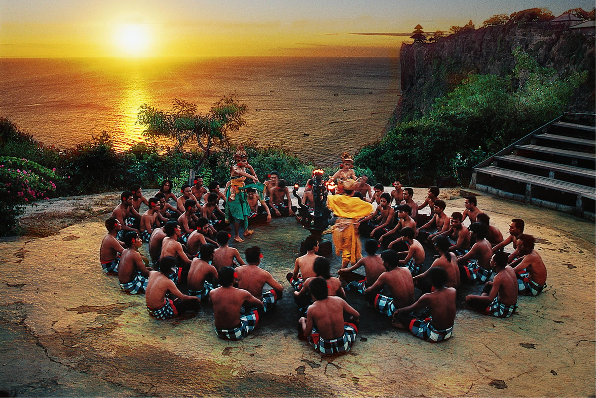

Tari tradisional Kecak
Tari Kecak adalah kesenian tradisional sejenis seni drama tari yang khas dari Bali. Tarian tersebut menggambarkan tentang cerita Pewayangan, khususnya cerita Ramayana yang dipertunjukan dengan seni gerak dan tarian. Tari Kecak ini merupakan salah satu kesenian tradisional yang sangat terkenal di Bali. Selain sebagai warisan budaya, Tari Kecak ini juga menjadi salah satu daya tarik para wisatawan yang datang ke sana.
Menurut sumber sejarah yang ada, Tari Kecak ini di ciptakan pada tahun 1930 oleh seniman Bali bernama Wayan Limbak dan Walter Spies seorang pelukis dari Jerman. Tarian ini terinpirasi dari ritual sanghyang dan bagian-bagian cerita Ramayana. Ritual sanghyang sendiri merupakan tradisi tarian dimana penarinya berada dalam kondisi tidak sadar dan melakukan komunikasi dengan Tuhan atau roh para leluhur kemudian menyampaikan harapan-harapannya kepada masyarakat. Nama Tari Kecak sendiri diambil kata “cak..cak..cak” yang sering diteriakan para anggota yang mengelilingi para penari, Sehingga tarian ini dikenal dengan nama Tari Kecak.
Dalam pertunjukannya, tarian diawali dengan pembakaran dupa, lalu para rombongan pengiring memasuki panggung sambil mengumandangkan kata “cak..cak.. cak”. Kemudian mereka membentuk sebuah barisan melingkar, yang di tengah-tengahnya digunakan untuk menari. Dalam pertunjukan Tari Kecak ini penari memerankan lakon-lakon dalam cerita Ramayana, seperti Rama, Shinta, Rahwana, dan tokoh-tokoh lainnya. Gerakan dalam tarian ini tidak terlalu terpaku pada pakem, sehingga penari lebih luwes dalam bergerak dan fokus pada jalan cerita saja. Kadang-kadang ada juga beberapa adegan lucu yang diperagakan para penarinya. Selain itu beberapa adegan yang atraktif juga ditampilkan seperti permainan api dan atraksi lainnya. hal inilah yang membuat Tari Kecak memiliki kesan sakral namun juga menghibur.